Specifying large systems of PDEs with ease¶
This article describes the cbc.pdesys Python package, built on top of FEniCS, for specifying and solving systems of nonlinear PDEs with very compact and flexible code.
About solving large systems of nonlinear PDEs¶
Computational Fluid Dynamics (CFD) presents many tough challenges for a scientific computing software. The Navier-Stokes equations that are used to model Newtonian fluid flows are represented by a nonlinear system of PDEs, where velocity is non trivially coupled with pressure – and that is just the beginning. The fluid may also interact with solid objects, flames, particles or simply another fluid with a different density. Most applications we investigate today are built by adding more and more PDE systems on top of the basic fluid flow model. For example, to study combustion we need to couple the Navier-Stokes equations with a turbulence model and several (often more than 10) nonlinear scalar transport equations, one for each of the reacting species. Combustion is hot, so we have to incorporate the energy equation in the model system of PDEs as well. Each of the three components (Navier-Stokes, turbulence model and combustion) of the complete model problem is represented by its own system of PDEs.
In fact, the needs of CFD is simply a very flexible software environment for systems of nonlinear PDEs. To meet these needs, we created the completely general cbc.pdesys Python package on top of FEniCS. The purpose of the package is to offer the computational scientist an efficient way of
- specifying possibly large, complicated systems of PDEs,
- dividing each system of PDEs into subsystems that are solved either fully coupled or segregated,
- linearizing nonlinear PDEs in a flexible way (Picard or Newton strategies),
The package targets any system of PDEs, but the applications so far have been restricted to CFD. The stream-functions above illustrating flow past a dolphin is computed in the tutorial given below.
Proof of concept – The elliptic relaxation model¶
Reynolds Averaged Navier-Stokes (RANS) models are widely used in industry for modeling statistical properties of turbulent flows. One of the most advanced RANS models around is the elliptic relaxation model. This model consists of the RANS equations and two coupled second rank tensor equations for modeling the Reynolds stress (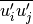). The model is often discussed in textbooks on advanced modeling of turbulent flows, but is rarely in use because of its complexity and because it is not implemented in any commercial CFD software. Without going too much into detail the most important equations of the model look something like
![\frac{\partial \overline{u_i}} {\partial t} + \overline{u_j} \frac{\partial \overline{u_i}}{\partial x_j}
&= - \frac{1} {\varrho}\frac{\partial p}{\partial x_i} + \frac{\partial}{\partial x_j} \nu( \frac{\partial \overline{u_i}}{\partial x_j} + \frac{\partial \overline{u_j}}{\partial x_i})
- \frac{\partial \overline{u'_i u'_j}}{\partial x_j} + \overline{f_i}, \\
\frac{\partial \overline{u_i}}{\partial x_i} &= 0, \\
\frac{\partial \overline{u'_i u'_j}} {\partial t} + \overline{u_k} \frac{\partial \overline{u'_i u'_j}}{\partial x_k} +
\frac{\partial T_{kij}}{\partial x_k} &= \ensuremath{\mathbb{P}}_{ij} + \ensuremath{\mathbb{G}}_{ij} - \varepsilon_{ij}, \\
L^2 \nabla^2 f_{ij} - f_{ij} &= -\frac{\ensuremath{\mathbb{C}}_{ij}}{k} - \frac{\overline{u'_i u'_j}/k - 2\delta_{ij}/{3}}{T}, \\
\ensuremath{\mathbb{P}}_{ij} &= -\overline{u'_i u'_k} \frac{\partial \overline{u_j}}{\partial x_k} - \overline{u'_j u'_k} \frac{\partial \overline{u_i}}{\partial x_k}, \\
\varepsilon_{ij} &= 2\nu\overline{\frac{\partial u_i}{\partial x_k} \frac{\partial u_j}{\partial x_k}}, \\
\ensuremath{\mathbb{G}}_{ij} &= \left(\varepsilon_{ij} - \frac{\overline{u'_i u'_j}}{k} \varepsilon \right) + k f_{ij}, \\
... &=](_images/math/abaaae67d0edc6cbfc16a2f7075c62a97a054774.png)
Here 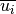 is a component of the Reynolds averaged velocity. The first two equations are basically the incompressible Navier-Stokes equations for (with variable viscosity), while the rest of the equations define the turbulence model. Note that we have two PDEs for the two second rank tensors and 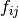. All in all the model requires solving for two second rank PDEs, one vector PDE and 3 scalar PDEs plus a number of derived quantities. That is, we need to solve 18 coupled, highly nonlinear PDEs.
FEniCS has support for working with PDEs of second rank tensors and as such we have been able to implement the elliptic relaxation model using no more than 300 lines of code. The variational form for the two coupled second rank tensors looks like
class Steady_RijFij_1(RIJFIJBase):
def form(self, Rij, Rij_, v_Rij, k_, e_, Pij_, nu, u_, nut_,
Fij, Fij_, v_Fij, Aij_, Aij, PHIij_, Cmu, T_, L_, **kwargs):
Fr = nu*inner(nabla_grad(Rij), nabla_grad(v_Rij))*dx \
+ inner( dot(nabla_grad(Rij), u_) , v_Rij )*dx \
- inner( k_*Fij , v_Rij )*dx \
- inner( Pij_ , v_Rij )*dx \
+ inner( Rij*e_*(1./k_) , v_Rij)*dx \
+ inner( Cmu*T_*dot(nabla_grad(Rij), Rij_),
nabla_grad(v_Rij) )*dx
Ff = inner( nabla_grad(Fij), nabla_grad(L_**2*v_Fij) )*dx \
+ inner( Fij , v_Fij )*dx \
- (1./k_)*inner( PHIij_ , v_Fij )*dx \
- (2./T_)*inner( Aij_ , v_Fij )*dx
return Fr + Ff
where Rij, Fij, v_Rij, and v_Fij are the trial- and test
functions for 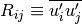 and ,
respectively. The most recently computed approximations to Rij and
Fij are recognized by an underscore: Rij_ and Fij_. More details
of the implementation and some results for turbulent flow in an axial
diffusor is provided in cbc.rans-MekIT11.pdf. The contours of
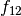 (left) and  (right) in the diffusior
are shown below:
(right) in the diffusior
are shown below:
Nonlinear equations and linearization¶
One of the many advantages of using a high-level language like FEniCS for CFD is the ease of which we can experiment with various discretizations, coupling and linearizations of the same model. For example, all turbulence models are highly nonlinear and coupled with the Navier-Stokes equations. Nonlinear equations must be solved as a sequence of linear problems, but a standard linearization according to Newton’s method will normally fail.
A feasible linearization, leading to a
convergent iteration to solve the highly nonlinear equations, is not
necessarily obvious for the turbulence model in question and usually
calls for extensive trial and error. Using cbc.pdesys, the placement
of a term in a variational form - explicitly on the right hand side
of the equation system or implicitly in the coefficient matrix - is
reduced to the inclusion or not of an underscore: k means an unknown
finite element function  (TrialFunction object), while k_ is
the most recently computed approximation to k (Function object).
For example, a nonlinear term 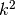 can be linearized as k_*k or
made fully known as k_*k_. The term can also be retained as k*k
in a Newton method, where the corresponding Jacobian can be
automatically computed.
(TrialFunction object), while k_ is
the most recently computed approximation to k (Function object).
For example, a nonlinear term 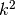 can be linearized as k_*k or
made fully known as k_*k_. The term can also be retained as k*k
in a Newton method, where the corresponding Jacobian can be
automatically computed.
As opposed to most other software packages for CFD, which require user defined PDEs to be solved in a segregated manner, the coupling or splitting of a system of PDEs is in cbc.pdesys a matter of inserting a few brackets in a little list. As a result, experimenting with numerics for complicated systems of nonlinear PDEs has never been easier!
Implementation details¶
There are basically three building blocks for setting up a problem with cbc.pdesys:
- Problem (defines the physical problem)
- PDESystem (defines a complete system of PDEs)
- PDESubSystem (defines one variational form as a subsystem of the complete system of PDEs)
Here we will briefly explain the rationale behind these three classes.
PDESubSystem is a class that contains all information necessary to assemble and solve one single variational form. In that way, a PDESubSystem is closely related to the Linear/NonlinearVariationalProblem/Solver classes provided with the regular Python dolfin package in FEniCS. In fact, all problems composed of one single variational form can equally well be set up with either approach, as demonstrated below. The cbc.pdesys package first shows its advantages when you need many variational forms to build your complete mathematical model of a physical phenomenon.
PDESystem is a class that contains a list of one or more PDESubSystem objects. For example, the Navier-Stokes equations can be represented through a PDESystem object. A coupled Navier-Stokes (NS) solver contains just one single PDESubSystem, which is a variational form for the coupled mixed finite element formulation for velocity and pressure. A segregated NS solver, on the other hand, contains two PDESubSystem objects, one for the velocity (vector field, governed by a vector PDE) and one for the pressure (scalar field, governed by a Poisson equation). The PDESystem object is responsible for creating all necessary FunctionSpace, TestFunction, and TrialFunction objects, as well as solution (Function) objects required to solve a certain system of PDEs.
Problem is a class that contains the mesh and boundaries (SubDomain objects), and that is responsible for initializing all PDESystem objects. The class also keeps track of any common parameters for all PDESystem objects, such as viscosity, time, and time step. Most importantly, the Problem class has implemented solve functionality used to advance any number of PDESystem objects simultaneously in time (or iterate over them in stationary problems).
Here is an example of how the Poisson equation can be solved, using either standard dolfin or cbc.pdesys:
from cbc.pdesys import *
mesh = UnitSquare(10, 10)
Q = FunctionSpace(mesh, 'CG', 1)
u = TrialFunction(Q)
v = TestFunction(Q)
u_ = Function(Q)
f = Constant(1.)
F = inner(nabla_grad(u), nabla_grad(v))*dx + f*v*dx
bcs = DirichletBC(Q, (0.), DomainBoundary())
# Implementation with LinearVariationalProblem/Solver
a, L = lhs(F), rhs(F)
poisson_problem = LinearVariationalProblem(a, L, u_, bcs=bcs)
poisson_solver = LinearVariationalSolver(poisson_problem)
poisson_solver.solve()
# Implementation with cbc.pdesys
poisson = PDESubSystem(vars(), ['u'], bcs=[bcs], F=F)
poisson.solve()
Note that the PDESubSystem takes as argument the python namespace, vars(), containing the solution Function, TrialFunction etc. The reason for this choice will become more evident when the same problem is solved using both the PDESystem and Problem classes, where such objects are created automatically by PDESystem:
from cbc.pdesys import *
mesh = UnitSquare(10, 10)
# Change desired items in the problem_parameters dict from cbc.pdesys
problem = Problem(mesh, problem_parameters)
poisson = PDESystem([['u']], problem, solver_parameters)
poisson.setup() # Creates FunctionSpace, Functions etc.
poisson.f = Constant(1.)
class Poisson(PDESubSystem):
def form(self, u, v_u, f, **kwargs): # v_u is the TestFunction
return inner(nabla_grad(u), nabla_grad(v_u))*dx + f*v_u*dx
bcs = DirichletBC(poisson.V['u'], (0.), DomainBoundary())
poisson.pdesubsystems['u'] = Poisson(vars(poisson), ['u'], bcs=[bcs])
problem.solve()
Here the namespace vars(poisson) contains u, u_, v_u (automatically created by poisson.setup()) and f. The namespace is futher provided as argument to the form method of the Poisson class.
Flow past a dolphin¶
We will now show a slightly more complicating example of how two
PDESystem objects can be created and solved through the use of a
Problem object. The physical problem regards the low Reynolds number
flow past a hot two-dimensional dolphin (where of course the simplification to
2D eliminates any physical resemblance to an actual flow past an actual dolphin),
where temperature ( ) is modeled as a passive scalar with a nonlinear
diffusion coefficient. The complete PDE system reads as follows in an
appropriately scaled form,
) is modeled as a passive scalar with a nonlinear
diffusion coefficient. The complete PDE system reads as follows in an
appropriately scaled form,

Discretizing these equations with a Crank-Nicolson type of scheme in time, and redefining 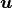 to be the velocity at the new time level and 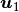 the velocity at the previous time level, we arrive at these spatial problems:

with
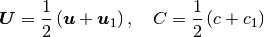
denoting the arithmetic averages needed in a Crank-Nicolson time integration. The corresponding variational formulation involves the integrals

where 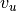, 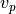, and 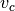 are test functions for the test
spaces for ,  , and , respectively.
, and , respectively.
The implementation of this model for the flow past a dolphin can be done as follows:
from cbc.pdesys import *
# Set up problem by loading mesh from file
mesh = Mesh('dolfin-outside.xml.gz')
# problem_parameters are defined in Problem.py
problem_parameters['time_integration'] = "Transient" # default='Steady'
problem = Problem(mesh, problem_parameters)
# Set up first PDESystem
solver_parameters['space']['u'] = VectorFunctionSpace # default=FunctionSpace
solver_parameters['degree']['u'] = 2 # default=1
NStokes = PDESystem([['u', 'p']], problem, solver_parameters)
NStokes.setup()
# Use a constant forcing field to drive the flow from right to left
NStokes.f = Constant((-1., 0.))
# No-slip boundary condition for velocity on the dolfin
dolfin = AutoSubDomain(lambda x, on_boundary: on_boundary \
and not (near(x[0], 0) or near(x[0], 1.) or \
near(x[1], 0.) or near(x[1], 1.)))
bc = [DirichletBC(NStokes.V['up'].sub(0), Constant((0.0, 0.0)), dolfin)]
# Set up variational form.
# u_, u_1, u_2 are the solution Functions at time steps N, N-1 and N-2.
# v_u/v_p are the TestFunctions for velocity/pressure in the
# MixedFunctionSpace for u and p
class NavierStokes(PDESubSystem):
def form(self, u, v_u, u_, u_1, p, v_p, nu, dt, f, **kwargs):
U = 0.5*(u + u_1)
return (1./dt)*inner(u - u_1, v_u)*dx + \
inner(u_1*nabla_grad(u_1), v_u) + \
nu*inner(nabla_grad(U), nabla_grad(v_u))*dx - \
inner(div(v_u), p)*dx + v_p*div(U)*dx - \
inner(f, v_u)*dx
NStokes.pdesubsystems['up'] = NavierStokes(
vars(NStokes), ['u', 'p'], bcs=bc, reassemble_lhs=False)
# Integrate the solution from t=0 to t=0.5
problem.prm['T'] = 0.5
problem.solve()
# Define a new nonlinear PDESystem for a scalar c
scalar = PDESystem([['c']], problem, solver_parameters)
scalar.setup()
class Scalar(PDESubSystem):
def form(self, c, v_c, c_, c_1, U_, dt, nu, **kwargs):
C = 0.5*(c + c_1)
return (1./dt)*inner(c - c_1, v_c)*dx + \
inner(dot(U_, nabla_grad(C)), v_c)*dx + \
nu*(1.+c_**2)*inner(nabla_grad(C), nabla_grad(v_c))*dx
# Note nonlinearity in c_ (above)
bcc = [DirichletBC(scalar.V['c'], Constant(1.0), dolfin)]
# Iterate on c_
scalar.U_ = 0.5*(NStokes.u_ + NStokes.u_1) # Scalar's form needs vel.
csub1 = Scalar(vars(scalar), ['c'], bcs=bcc, max_inner_iter=5)
scalar.pdesubsystems['c'] = csub1
# Integrate both PDESystems from t=0.5 to t=1.0 using Picard
# iterations on each time step
problem.prm['T'] = 1.0
problem.solve()
# Switch to using the Newton method for the nonlinear variational form
# With these calls we replace c by c_ in the Scalar form and compute
# the Jacobian wrt c_
csub1.prm['iteration_type'] = 'Newton'
csub1.define()
# Integrate both PDESystems from T=1.0 to T=1.5 using Newton
# iterations on each time step for the scalar
problem.prm['T'] = 1.5
problem.solve()
There are a few interesting features of cbc.pdesys at display here. First, in the creation of NStokes (PDESystem object), we request a coupled system of PDEs (using MixedFunctionSpace) consisting of the vector u and the scalar p (scalar is default option). A segregated system, on the other hand, would require the list [['u'], ['p']] being sent to the PDESystem object to indicate that u and p are solved in sequence, i.e., in a segregated way. The solver_parameters dictionary contains many dictionaries, with default values for many of the options. The dictionaries use the names of the variables (here u and p) as keys. FunctionSpace is the default option for the space dictionary and 1 for the degree dictionary (polynomial order of the basis functions), and as such we need only specify new values for u.
The variational form is hooked up by subclassing the PDESubSystem class and overloading the form method that returns the variational form. The PDESubSystem class contains numerous methods and switches for optimization of finite element assembly and solving linear or nonlinear system arising from the form. Since the Navier-Stokes equations being solved here are discretized with explicit convection, the left hand side coefficient matrix will not change in time. When we provide this information (through reassemble_lhs=False), the coefficient matrix will only be assembled on the first time step.
One major advantage of placing numerical schemes as methods in a variational form class is the ease of which we can manipulate and store numerous different discretizations. The classes of numerical schemes are typically kept in a single file, or Python module (e.g., NavierStokes.py), and can be retrieved as required. So if we in the future need to solve the Navier-Stokes equations together with other PDEs, then we can simply pull the scheme from NavierStokes.py and reuse it. This is not possible with the standard dolfin implementation displayed above. For turbulent flow models, we would like to set up our problem and then select the appropriate turbulence model and numerics from a predefined library. Each turbulence model will then have a main PDESystem class and a library of possible transient and steady schemes that can be picked at runtime.
Note that implementing a new problem through cbc.pdesys generally will not require redefining the variational forms as done above (Scalar and NavierStokes). Instead the user will be required to set up a mesh and its boundaries, pick PDESystem's from modules, initialize and solve. In the end this leads to very compact, flexible and, most importantly, reusable code.
RANS models¶
Most industrial flows have high Reynolds number and are far too complex for all details of the flow to be fully resolved. For this reason researchers have developed simplified models representing the most relevant statistical properties of the flow, like the mean velocity and the mean turbulent kinetic energy. The largest family of such models are the Reynolds Averaged Navier Stokes (RANS) equations. There are hundreds of different RANS models, each represented by a system of nonlinear PDEs, coupling statistical turbulence quantities with the mean flow.
There is a hierarchy of turbulence models. So-called eddy-viscosity (EV) models close the Reynolds stress through the following formula:
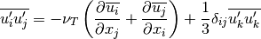
Eddy-viscosity models are usually classified by the number of additional PDEs that are required to close an expression for the turbulent viscosity 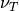. Reynolds stress models, like the elliptic relaxation model outlined above, solves a PDE for the second rank tensor and do not make use of the eddy-viscosity model. Using cbc.pdesys we have currently implemented the following turbulence models in cbc.rans:
One-equation EV models
- Spalart-Allmaras
Two-equation EV models
- Standard k-epsilon
- Low-Reynolds k-epsilon (3 different)
- Menter’s SST
Four-equation EV models
- V2F (2 different)
Reynolds stress models
- Standard
- Elliptic relaxation
The tutorial cbc.rans-MekIT11.pdf on using cbc.rans to implement advanced turbulence models was published in the proceedings of the 6th National Conference on Computational Mechanics, 2011 (MekIT‘11).
The interested reader will also learn more about the motivation for, the design, and the inner workings of the cbc.rans package by studying the recently published paper A FEniCS-Based Programming Framework for Modeling Turbulent Flow by the Reynolds-Averaged Navier-Stokes Equations (Advances in Water Resources, 2011, DOI: 10.1016/j.advwatres.2011.02.013).